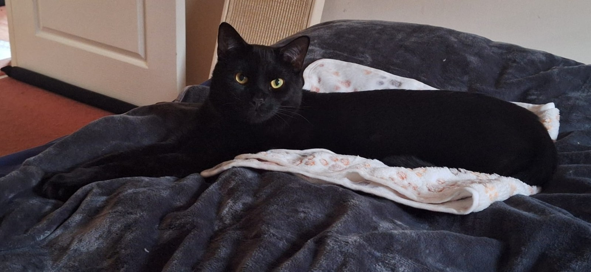

01 / A familiar face
Drop-in visits
A visit for your cat or dog when you can’t be there. Discuss feeding, company and your pet’s usual routine with Anastasia.
£20per visit
Two visits per day: £40
Additional cat: +£2
From everyday visits to overnight stays, caring support for your cats and dogs while you’re away.
With Anastasia Kovaliova-Davies · Caring and Tender Sitter

Choose the support you need, then get in touch to discuss your pet’s routine and your dates.
A visit for your cat or dog when you can’t be there. Discuss feeding, company and your pet’s usual routine with Anastasia.
Two visits per day: £40
Additional cat: +£2
A chance to stretch their legs and enjoy time outdoors. Agree the walk and your dog’s needs before booking.
Additional dog: +£5
Contact us to confirm walk duration.
Support when you’re away for longer. Get in touch to discuss overnight arrangements and the right care for your pet.
One-week stay: £280
Arrangements confirmed before booking.
Holiday visits, including bank holidays and Christmas: £30 per visit. Medication: +£3, subject to agreement. Vet transport costs vary. Please confirm the full quote and care arrangements before booking.

Caring and Tender Sitter is based in Ashford, Kent. Your contact is Anastasia Kovaliova-Davies.
Every pet has their own habits and personality. Start with a conversation about what helps yours feel comfortable, from daily routines to any extra support they need.
Anastasia has completed courses in:
Share your dates, the service you need and a little about your cat or dog.
Discuss availability, routines, care needs and the full price with Anastasia.
Confirm the arrangements together before your booking goes ahead.
A few familiar faces from the C&TS photo collection.
Select a photo to take a closer look.
C&TS is based in Ashford, Kent. Contact Anastasia with your postcode to check whether your address can be covered.
Medication support carries an additional £3 charge, subject to agreement. Please discuss the medication, timing and your pet’s needs with Anastasia before booking so suitability and charges can be confirmed.
Please confirm the duration directly with Anastasia when discussing your booking.
Call, send a WhatsApp message or email with your preferred dates and the care you need. Your booking is confirmed directly with Anastasia.
Contact Anastasia to check availability and discuss your pet’s needs.
Enquire on WhatsApp →Tell Anastasia a little about the care you need. Preview your message, then choose WhatsApp or email to send it.
Nothing has been sent yet. Open WhatsApp or email below and send your message there. Availability and bookings are confirmed directly with Anastasia.